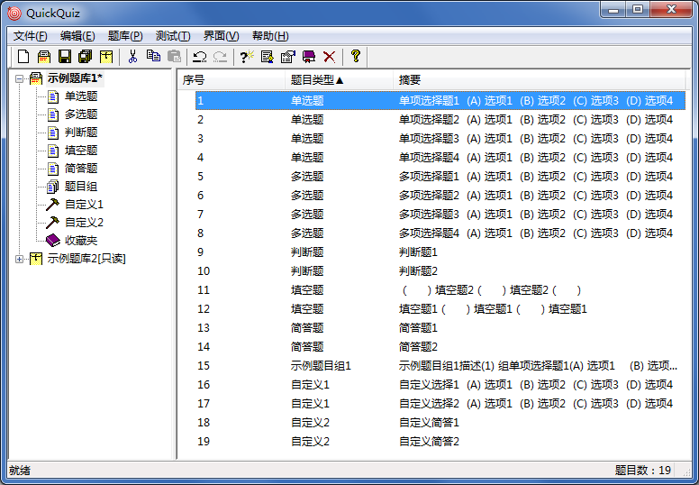

主界面
主界面
在Windows7系统下运行的效果如下图。

 | 本帮助文档中的所有演示界面均为Windows7 Ultimate x64系统风格，不同版本系统下界面可能有轻微差异，不再另行说明。 |
|---|
主界面分为左右两个窗格，左侧窗格显示当前打开的全部题库，右侧窗格显示选中题库的题目。
左侧窗格支持拖拽打开文件功能，当未打开任何题库时，双击左侧窗格可弹出打开题库对话框。QuickQuiz支持的题库文件类型详见
表1。
当在左侧窗格中选中题库节点（闭合态图标为，展开态图标为）时，右侧窗格将显示选中题库内的全部题目；当将题库节点展开，并选中各类型节点（默认类型图标为

，自定义类型图标为，题目组类型图标为）时，右侧窗格显示选中题库内选中类型的全部题目；当选中收藏夹（未选中图标为，选中图标为）时，右侧窗格显示选中题库中被收藏的全部题目。
为便于说明，我们做如下约定：
- 当在左侧窗格中选中题库节点时，称右侧窗格为“题库窗格”；
- 当在左侧窗格中选中类型/题目组节点时，称右侧窗格为“类型窗格”。
在左侧窗格中，若题库在保存前有改动，则将会在题库名称右侧显示“＊”符号；若题库为只读，则将会在题库名称右侧显示“[只读]”字样；若题库被加密，则题库节点图标的右下角将显示一锁形（）图案。
在右侧窗格点击标头，可按照不同的规则对题目进行排序：
- 点击“序号”标头可按照题目的加入顺序进行排序；
- 点击“摘要”标头可按照题目内容进行排序；
- 点击“题目类型”标头可按照题目类型分类排序（同类型的题目则按题目内容进行排序）
标头文字右侧上三角表示升序排列，下三角表示降序排列，可通过多次点击同一标头切换排序规则。
| 排序功能仅改变显示顺序，方便对题目进行查看管理，不会对题库文件造成改动。 |
|---|
GX Software 2020-2021
V2.0